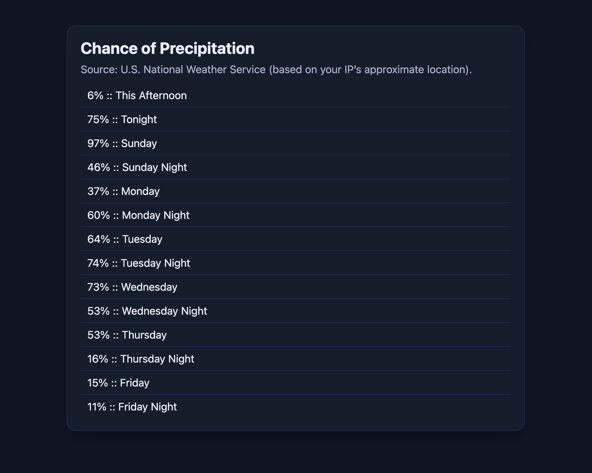

Precipitation Forecast
Go · HTTP · JSON · APIs
I started this project because I wanted to learn Go through something more involved than tutorials. I built a small web app that finds a location and uses National Weather Service data to show precipitation forecasts.
Getting the forecast required several API requests rather than one direct request. I first had to get coordinates for the location, use those coordinates to find the correct National Weather Service forecast URL, and then request the forecast itself. I kept those steps in separate functions so the data was easier to follow and problems were easier to debug.
I also decoded JSON responses into Go structs, handled missing precipitation values, and added request timeouts. The frontend is simple because I mainly used the project to learn Go and get more experience working with APIs.
